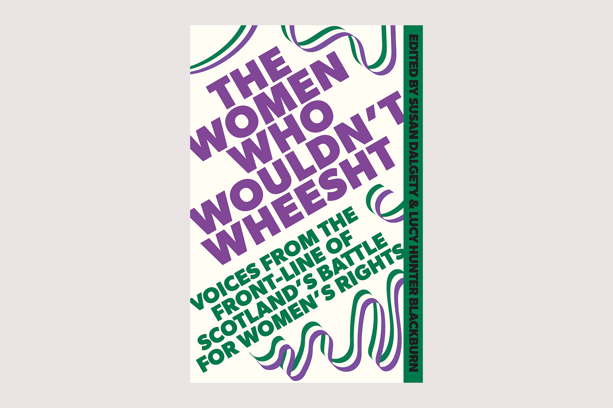
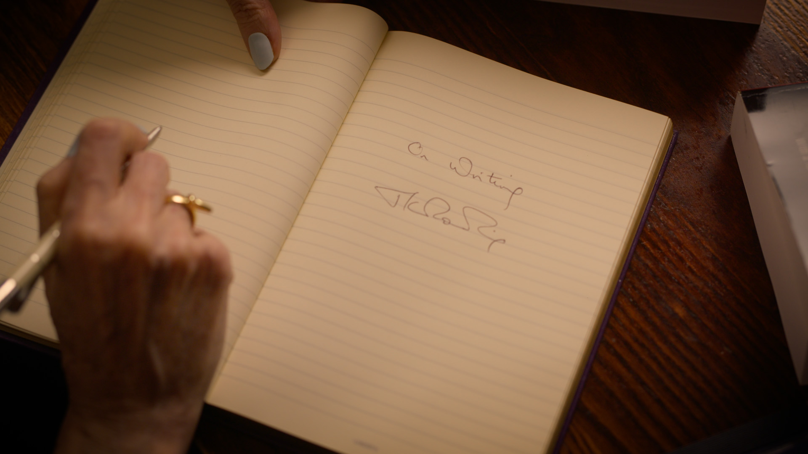

|  |
Дж. К. Роулинг входит в число авторов новой книги, опубликованной сегодня под редакцией Сьюзан Далджети и Люси Хантер Блэкберн. «Женщины, которые не будут ворчать» — это сборник из более чем тридцати эссе, запечатлевших важный момент в современной истории: как низовое шотландское женское движение, восходящее к суфражисткам и феминисткам второй волны 1970-х и 1908-х годов, бросило вызов политическому истеблишменту — и изменило ход истории. |
|
Поклонники и начинающие писатели часто задают Дж. К. Роулинг вопросы о ее писательском процессе: где она пишет, как она пишет, ее вдохновение и ее исследования, как появляется книга, от зародыша идеи до процесса редактирования и последующей публикации. Впервые Дж. К. Роулинг ответила на эти вопросы, открыто и подробно обсудив свои произведения, включая «Гарри Поттера», другие ее детские книги «Икабог» и «Рождественская свинья», а также написание под псевдонимом Роберт Гэлбрейт серии детективных романов «Корморан Страйк». |
 |
|
Pottermore Publishing и Audible объявили о совершенно новом совместном производстве оригинальных историй о Гарри Поттере, впервые возвращая к любимому опыту прослушивания. Эти полноценные аудиопостановки, выход которых запланирован на конец 2025 года, оживят эти культовые истории так, как никогда ранее, предлагая захватывающие аудиоразвлечения с помощью высококачественного звукового дизайна, полного спектра голосов персонажей и реального звукового сопровождения. |
|
|
Данные страницы сделаны на основе сайта Дж.К. Роулинг. Так как очень люблю Гарри Поттера, то решила взять сайт этой писательницы Сайт, взятый за основу |